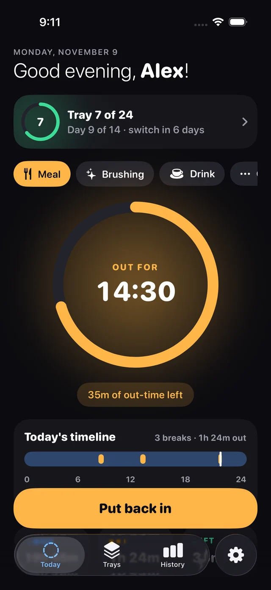

One tap out.
One tap in.
Take your aligners out and Inly starts counting. Tag the break — meal, brushing, a drink — and the ring shows exactly how much of today's out-time is left.
- Out reasons, with Meal as the default
- Fix or add a missed break any time
- Gentle nudge before you run over
